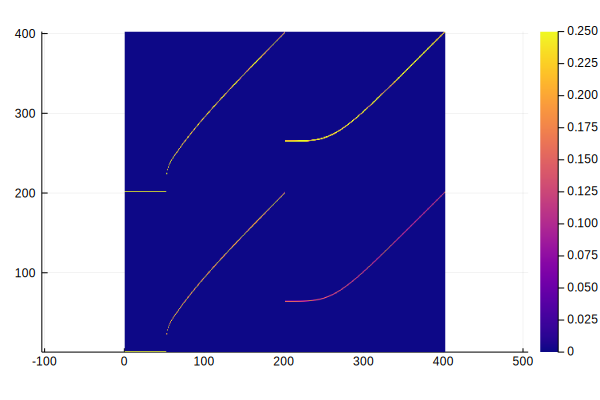
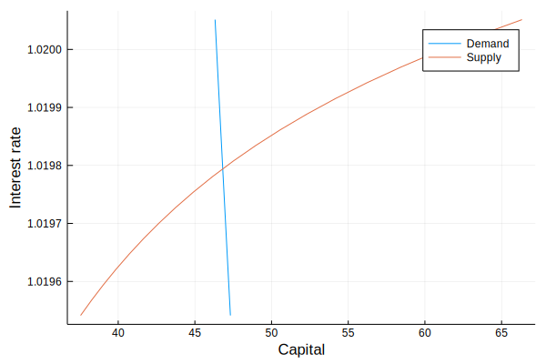
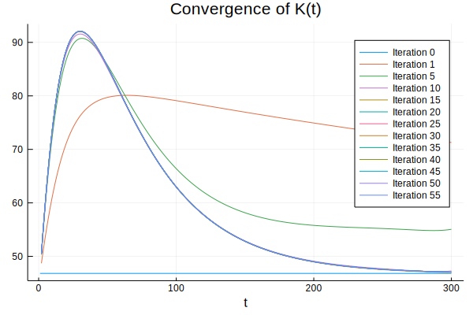
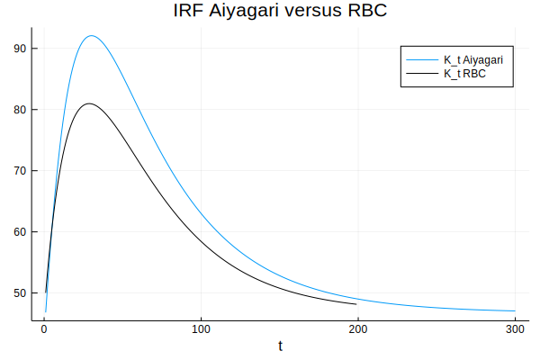
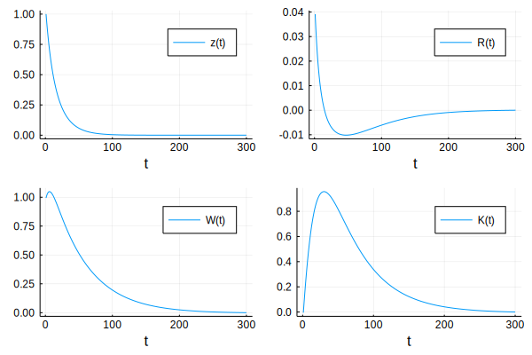
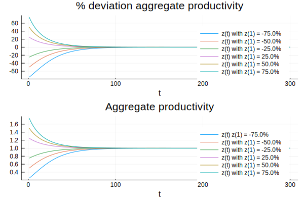
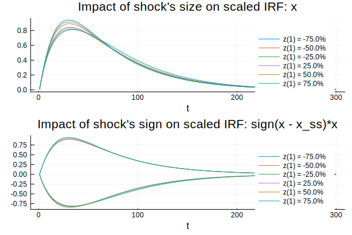
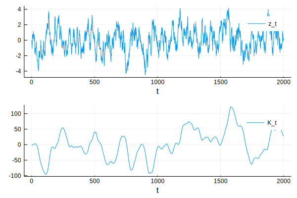

Introduction
The Bewley-Huggett-Aiyagari-Imohoroğlu economies are the workhorse of modern macroeconomics. In these economies, markets are “incomplete”. Agents cannot fully insure against risk and decide to self-insure by holding a safe asset to smooth their consumption (see Ljungqvist and Sargent (2018) for a textbook treatment of this topic).
In this post, I consider the model of Aiyagari (1994). While the original model abstracts from aggregate fluctuations, Economists have since developed several techniques to simulate out-of-steady-state dynamics for this class of models.
Here, I use a methodology that is quite general. It is a 3-step procedure, which proceeds as follows:
- Solve for the non-stochastic steady-state
- Perturbe the model around its non-stochastic steady-state
- Use the perturbation to calculate out-of-steady-state dynamics
I use the BKM and GenBKM algorithms for step 2 and 3, which means that the only theoretical tool needed is backward induction (i.e. knowing the value tomorrow, what is the value today?).
What are the cons of the methodology presented here? First, the methodology assumes a small aggregate shock. An implicit assumption is that aggregate shocks do not modify the value of the non-stochastic steady-state. Said differently, the cycle does not change the trend, which seems to be violated in some instances. If the shock is large, the value of steady-state may be altered and the methodology presented here is not adequate. An example of a large shock could be the disruption caused by COVID-19.
This methodology also fails when the non-stochastic steady-state is not relevant for the dynamic economy. This can problematic in portfolio choice problems, in which portfolios are indeterminate when aggregate uncertainty vanishes (see Coeurdacier et al (2011)).
On the pro side, the methodology presented here is fast (orders of magnitude faster than Krusell-Smith (1998)) and transparent. The code can be downloaded here.
I. The Model
In the model of Aiyagari (1994), there is continuum of agents each maximizing an infinite flow of discounted utility:
$$ E_{0} \sum_{t=0}^{\infty} \beta^t U(c_t) $$
subject to the constraint that consumption plus savings in period $t$ (the left hand side of the next equation) is equal to labor earnings plus savings inherited from the last period (the right hand side of the next equation):
$$ c_t + a_{t+1} = w_t l_t + (1 + r_t) a_t $$
The variable $l_t$ captures idiosyncratic risk in labor earnings and could be interpreted as unemployment risk. We also make the assumptions that consumption cannot be negative and that agents cannot borrow more than a certain amount $B$:
$$ c_t \geq 0 $$
$$ a_t \geq -B $$
The behavior of firms can be summarized by a representative firm hiring workers and capital:
$$ Y_t = z_t K_t^{\alpha} L_t^{1-\alpha} $$
where $Y_t$ is total output, $K_t$ is the aggregate capital level and $L_t$ is the aggregate labor supply. The variables $w_t$ and $r_t$ are pinned down each period by the first order conditions (FOCs) of the representative firm. Note that at the non-stochastic steady-state $z_t = z_{SS} = 1$ (by definition) and both $w_t$ and $r_t$ are constant. Importantly, because agents have to take into consideration the value of $w_t$ and $r_t$ when making decisions, the cross-sectional distribution of agents across capital and idiosyncratic states matters (through the FOCs of the representative firm).
II. Methodology
To solve for individual policy functions, I use the endogenous grid method (EGM) of Carroll (2006). The main idea of this method is to start from the end-of-period level of capital. Using the Euler equation, one may recover the beginning-of-period consumption and level of capital without using a root-finding algorithm.
To determine the non-stochastic equilibrium, I solve for the fixed-point problem over the aggregate capital level $f(K*) = 0$ using Brent’s method.
To calculate the response of the economy to one-period unforeseen aggregate shock (an “MIT shock”), I use a standard backward-forward “shooting” method:
- holding constant the path of aggregate capital level $(K_t)_{t=1}^{T}$, calculate the policy functions
- holding constant the policy functions, calculate the path of aggregate capital level $(K_t)_{t=1}^{T}$
- repeat until convergence of the path for aggregate capital level $(K_t)_{t=1}^{T}$
To simulate out-of-steady-state dynamics, I use the BKM algorithm, which relies on the assumption that the response of the economy to an aggregate shock $d_t$ is linear with respect to the aggregate state $z_t$:
$$ d_t = z_t d(1, 0, 0, …) + z_{t-1}d(0, 1, 0, …) + z_{t-2}d(0, 0, 1, …) + … $$
or more compactly:
$$ d_t = \sum_{k=0}^{+\infty} z_{t-k} d_{k} $$
where
$$ d_{1} = d(1,0,0,…)$$ $$ d_{2} = d(0,1,0,…)$$ $$ d_{3} = d(0,0,1,…)$$
That is, the evolution of equilibrium variables is a moving average of past shocks. However, by calculating several trajectories after an MIT shock, one sees that linearity assumption is slightly violated. Hence, I use the GenBKM algorithm, which is a refinement of the BKM algorithm taking into consideration these slight violations of linearity.
III. Implementation
These ideas are implemented using Julia
versioninfo()
Julia Version 1.3.0
Commit 46ce4d7933 (2019-11-26 06:09 UTC)
Platform Info:
OS: Linux (x86_64-pc-linux-gnu)
CPU: Intel(R) Core(TM) i7-8850H CPU @ 2.60GHz
WORD_SIZE: 64
LIBM: libopenlibm
LLVM: libLLVM-6.0.1 (ORCJIT, skylake)
II. A Dependencies
using Distributions
using Plots
using DataFrames
using Random
using ForwardDiff
using LinearAlgebra
using Interpolations
using DataFrames
using Optim
Random.seed!(1234);
using NBInclude #To load stuct and functions from other notebooks
@nbinclude("utils.ipynb") #mutable structs and primitive functions for the model
@nbinclude("RBC.ipynb") #Aiyagari model, without the borrowing constraint (standard RBC)
@nbinclude("EGM.ipynb") #implementation of the EGM method
@nbinclude("SteadyState.ipynb") #to calculate the non-stochastic steady-state
@nbinclude("GenBKM.ipynb") #to simulate the stochastic model using the GenBKM algorithm
II.B Steady-state
Finding the steady-state value of capital
Finding the non-stochastic equilibrium is a fixed-point problem over the aggregate capital level $f(K*) = 0$, which can be solved using Brent’s method:
p = Params() #struct with model parameters
z_ss = 1.0 #aggregate productivity at the non-stochastic steady-state
@time oo = optimize(K -> eq_K(K,p), 10, 100, Brent()) #solve for the steady-state value of capital using Brent method
K_star = oo.minimizer;
println("Steady-state value of capital K* = $(K_star)")
# Store the optimal policy function at the steady-state
g_star, c_star, g_low_star, g_high_star, success_flag= solve_EGM(x->log(x), x->log(x), R(K_star, z_ss, p), W(K_star, z_ss, p), p); #solve for policy functions
# Store the stationary distribution at the steady-state
t_star = make_trans_mat(g_star, p) #generate transition matrix
d_star = get_stationary_dist(t_star); #stationary distribution
Visualizing transition probabilities
xs = [string("x", i) for i = 1:size(t_star,1)]
ys = [string("y", i) for i = 1:size(t_star,2)]
heatmap(t_star, aspect_ratio = 1, color=:plasma, clim=(0., 0.25))

Notes: This graph shows the transition probabilities across capital and idiosyncratic probability states.
Visualizing convergence toward the steady-state
One may visually check that the equilibrium exists and is unique:
# Solve for the demand and supply of capital for different values of the interest rate
K_grid = collect(range(oo.minimizer-0.5, stop=oo.minimizer+0.5, length=20))
K_implied_grid = similar(K_grid)
R_grid = similar(K_grid)
for (K_index, K_value) in enumerate(K_grid)
R_s, W_s = R(K_value, z_ss, p), W(K_value, z_ss, p) #calculate interest rate R and wage W
gg, c_star, g_low, g_high, success_flag= solve_EGM(x -> log(x), x -> 2*log(x), R_s, W_s, p) #solve for policy functions
tt = make_trans_mat(gg, p) #generate transition matrix
dd = get_stationary_dist(tt) #stationary distribution
K_implied = aggregate_K(dd, p) #implied level of capital
R_grid[K_index] = R_s #store interest rate
K_implied_grid[K_index] = K_implied #store demand of capital
K_grid[K_index] = K_value #store supply of capital
end
# Plot demand and supply of capital
plot(K_grid, R_grid, label = "Demand", ylabel="Interest rate", xlabel="Capital")
plot!(K_implied_grid, R_grid, label = "Supply")

Notes: This graph shows the demand and the supply of capital as a function of the interest rate.
II.C MIT Shock
Backward and forward updates
The next block implements the backward-forward shooting method:
- holding the path of aggregate capital $(K_t)_{t=1}^{T}$, calculate the policy functions
- holding constant the policy functions, calculate the aggregate capital $(K_t)_{t=1}^{T}$
function backward_update(g_low_ss::Function, g_high_ss::Function, K_path_guess::Array{Float64,1}, z_path::Array{Float64,1}, p::Params)
"""
Update policy functions backward, holding {K_t,z_t} constant
"""
nT = length(z_path)
g_low_path = Array{Function}(undef,nT) #initialize two lists of functions
g_high_path = Array{Function}(undef,nT)
g_low_path[nT] = g_low_ss
g_high_path[nT] = g_high_ss
a_path = zeros(p.nI, p.grid_size, nT) #to store policy functions on savings grid
R_path = zeros(nT) #to store the interest rate on path
W_path = zeros(nT) #to store the wage on path
#Start from the steady-state and iterate backward
#holding constant the path for {K_t,z_t}
#---------------------------------------------------
for t=nT👎2 #iterate backward
# Next period
R_path[t], W_path[t] = R(K_path_guess[t], z_path[t], p), W(K_path_guess[t], z_path[t], p)
# Current period
R_path[t-1], W_path[t-1] = R(K_path_guess[t-1], z_path[t-1], p), W(K_path_guess[t-1], z_path[t-1], p)
# Current period's policy, given next period
a_path[:,:,t-1], c_new, g_low_path[t-1], g_high_path[t-1] = euler_back(g_low_path[t], g_high_path[t], R_path[t-1], W_path[t-1], R_path[t], W_path[t], p)
end
return a_path, g_low_path, g_high_path
end
function forward_update(K_star::Float64, a_path::Array{Float64,3}, d_ss::Array{Float64,1}, p::Params)
"""
Update forward the distribution of agents + aggregate capital
dd_path_forward, K_path_forward
"""
nT = length(z_path)
K_path_forward = zeros(nT)
K_path_forward[1] = K_star
dd_path_forward = zeros(size(d_ss,1), nT)
dd_path_forward[:,1] = d_ss
#2. Iterate forward {K_t,z_t}, using the policy
#functions from step 1
#-----------------------------------------------
for t=2:nT
tt = make_trans_mat(a_path[:,:,t-1], p) #generate transition matrix
dd_path_forward[:,t] = tt*dd_path_forward[:,t-1]
K_path_forward[t] = aggregate_K(dd_path_forward[:,t], p)
end
return dd_path_forward, K_path_forward
end
Finding the transition path
One problem with the backward-forward shooting method is that updating the path for $(K_t)_{t=1}^{T}$ “too quickly” may result in the overall procedure to diverge. An easy fix is to take a convex combination of the previous guess and the newly calculated path, with $\lambda$ small:
$(K^{NEW}_t)_{t=1}^{T} = \lambda (K_t)_{t=1}^{T} + (1-\lambda)(K^{OLD}_t)_{t=1}^{T}$
The next function implements this idea, with the extra feature that $\lambda$ increases when the distance between two iterations is getting small (too speed up convergence) and decreases when the distance is getting bigger (to prevent divergence). See this excellent notebook for the same idea applied to an OLG model.
function solve_mit!(K_path, g_low_ss::Function, g_high_ss::Function, d_ss::Array{Float64,1},
K_ss::Float64, z_path::Array{Float64,1}, p::Params; convex_combination::Float64 = 0.2,
shrink_factor::Float64 = 0.5, expand_factor::Float64 = 1.05,
max_iter::Int64 = 1000, tol::Float64=1e-6, verbose::Bool=true, display_iter::Int64 = 20)
"""
Finds the path for aggregate capital K_path
"""
diff = Inf #initialization
diff_old = Inf #initialization
convergence_flag = 0 #initialization
damp = convex_combination #initial dampening parameter
for i_mit=1:max_iter
# Step 1. Solve backward the policy functions {g_t(a,e_low), g_t(a,e_high)}, keeping {K_t,z_t} constant:
a_path, g_low_path, g_high_path = backward_update(g_low_ss, g_high_ss, K_path[i_mit], z_path, p);
#2. Solve forward {K_t,z_t}, keeping policy functions {g_t(a,e_low), g_t(a,e_high)} constant:
dd_path_forward, K_path_forward = forward_update(K_ss, a_path, d_star, p);
# Distance between guess for {K_t} and implied values:
diff = maximum(abs.(K_path_forward - K_path[i_mit]))
# Display every display_iter iterations
if verbose==true
if mod(i_mit,display_iter) == 0
println("Iteration $(i_mit). diff = $(diff)")
end
end
if diff < tol
if verbose==true
println("Convergence reached after $(i_mit) iterations.")
end
convergence_flag = 1
break
else
# Update the guess for the path {K_t}
# Decrease the dampening factor
if diff > diff_old
damp = max(min(damp * shrink_factor, 1.0-eps()), eps())
# Increase the dampening factor
else
damp = max(min(damp * expand_factor, 1.0-eps()), eps())
end
if mod(i_mit, 10) == 0
if verbose==true
println("damp = $(damp); diff = $(diff)")
end
end
# Store the updated path for {K_t}
push!(K_path, damp.*K_path_forward .+ (1.0 - damp).*K_path[i_mit])
diff_old = diff
end
end
return K_path, convergence_flag
end
Find the path for {K_t} for a 1 std. dev positive productivity shock
max_t = 300 #Let us assume that the economy is back to the steady state after max_t periods
z_ss = 1.0 #Value of aggregate productivity at the non-stochastic steady-state
z_shock = 2.0 #Value of the inital shock
# Let's generate a path for the aggregate shock
z_path = ones(max_t)
z_path[1] = z_ss*z_shock #initial shock
# Evolution of aggregate productivity in level:
for t_index=2:max_t
z_path[t_index] = z_path[t_index-1]^p.rho
end
# Heroic guess for the initial path of {K_t}: K_t = K* for all t
K_path = []
push!(K_path, repeat([K_star], max_t))
# Find the path for {K_t}:
@time K_path, convergence_flag = solve_mit!(K_path, g_low_star, g_high_star, d_star, K_star, z_path, p, convex_combination=0.25);
# Find the path for other aggregates:
R_path = zeros(length(z_path)) #to store the interest rate on path
W_path = zeros(length(z_path)) #to store the wage on path
for t=length(z_path)👎1 #iterate backward
# Next period
R_path[t], W_path[t] = R(K_path[end][t], z_path[t], p), W(K_path[end][t], z_path[t], p)
end
Visualize convergence of the transition path
The first guess for $(K_t)_{t=1}^{T}$ is that it is equal to the non-stochastic steady-state value $K*$. Very quickly, the path for $(K_t)_{t=1}^{T}$ converges to the perfect foresight transition path:
p0 = plot(1:max_t, K_path[1], label= "Iteration 0", title="Convergence of K(t)")
plot!(p0, 2:max_t, K_path[2][2:end], label = "Iteration 1")
show_every = 5 #display {K_t} for each multiple of show_every
for k in 2:length(K_path)
if mod(k,show_every) == 0
plot!(p0, 2:max_t, K_path[k][2:end], xlabel="t", label = "Iteration $(k)", title="Convergence of K(t)", legend=:best)
end
end
p0

Notes: This graph shows the path for capital {K_t}^(i) for different iterations of the backward-forward algorithm
Removing the borrowing constraint
The next graph compares the current model to a similar model without a borrowing constraint. With no borrowing constraint, the aggregate level of capital reacts less to an aggregate shock in productivity:
p1 = plot(1:max_t, K_path[end], label= "K_t Aiyagari", title="IRF Aiyagari versus RBC")
plot!(p1, xx[RBCp.iK,2:end] .+ K_star, label = "K_t RBC", color = "black", xlabel="t")

Notes: This graph shows the impulse response of K_t of for the Aiyagari model and a RBC model.
p1 = plot(1:max_t, z_path./z_path[end] .-1, label = "z(t)", xlabel= "t")
p2 = plot(1:max_t, R_path./R_path[end] .-1, label= "R(t)", xlabel= "t")
p3 = plot(1:max_t, W_path./W_path[end].-1 , label= "W(t)", xlabel= "t")
p4 = plot(1:max_t, K_path[end]./K_path[end][end] .-1, label= "K(t)", xlabel= "t" )
p5 = plot(p1, p2, p3, p4)

Notes: This graph shows the percentage deviation from steady-state values of (i) aggregate productivity (ii) the interest rate (iii) wages (iv) capital.
Linearity checks
To simulate the stochastic economy, the BKM algorithm makes the assumption that an MIT shock is linear with respect to the aggregate shock. That is, doubling the initial shock will simply double the value of aggregates along the transition path without changing the shape of the path. The next block calculates several transition paths for different initial aggregate shocks.
max_t = 300 #Let us assume that the economy is back to the steady state after max_t periods
z_ss = 1.0 #Value of aggregate productivity at the non-stochastic steady-state
# Different initial shocks
array_sigma = collect(range(-0.75, stop=0.75, step=0.25))
# Let's exclude sigma = 0
array_sigma = array_sigma[array_sigma .!= 0.]
# To store the different scaled IRF:
x_mit_scaled_sigma = zeros(max_t, length(array_sigma))
# To store path of aggregate productivity:
z_path_sigma = zeros(max_t, length(array_sigma))
# To store the path for the %deviation of aggregate productivity from its steady-state value
z_path_sigma_dev = zeros(max_t, length(array_sigma))
for (index_sigma, sigma) in enumerate(array_sigma)
# Let's generate a path for the aggregate shock
z_path = ones(max_t)
z_path[1] = z_ss + z_ss*sigma
# Evolution of aggregate productivity in level:
for t_index=2:max_t
z_path[t_index] = z_path[t_index-1]^p.rho
end
# Heroic guess for the initial path of {K_t}: K_t = K* for all t
K_path = []
push!(K_path, repeat([K_star], max_t))
# Find the path for {K_t}:
@time K_path, convergence_flag = solve_mit!(K_path, g_low_star, g_high_star, d_star, K_star, z_path, p, convex_combination=0.2, verbose=false);
# Check for convergence
if convergence_flag!=1
error("No convergence for z(1) = $(z_path[1]).")
end
# store the path for z:
z_path_sigma[:, index_sigma] = z_path
# store for the %deviation of aggregate productivity from its steady-state value
z_path_sigma_dev[:, index_sigma] = z_path./z_ss .- 1.0
# Scaled IRF: how a percentage deviation in z_t from its steady-state results in a % deviation of k_t
x_mit_scaled_sigma[:, index_sigma] = (K_path[end]./K_star .- 1.0)./z_path_sigma_dev[1, index_sigma]
end
p0 = plot()
p1 = plot()
p2 = plot()
p3 = plot()
for (index_sigma, sigma) in enumerate(array_sigma)
if index_sigma == 1
p0 = plot(100 .*z_path_sigma_dev[:, index_sigma], label="z(t) with z(1) = $(round(100 .*z_path_sigma_dev[1, index_sigma], digits=2))%")
p1 = plot(z_path_sigma[:, index_sigma], label="z(t) z(1) = $(round(100 .*z_path_sigma_dev[1, index_sigma], digits=2))%")
p2 = plot(x_mit_scaled_sigma[:, index_sigma], label="z(1) = $(round(100 .*z_path_sigma_dev[1, index_sigma], digits=2))%")
p3 = plot(sign(z_path_sigma[1, index_sigma] - z_ss)*x_mit_scaled_sigma[:, index_sigma], label="z(1) = $(round(100 .*z_path_sigma_dev[1, index_sigma], digits=2))%")
else
plot!(p0, 100 .*z_path_sigma_dev[:, index_sigma], label="z(t) with z(1) = $(round(100 .*z_path_sigma_dev[1, index_sigma], digits=2))%", title = "% deviation aggregate productivity", xlabel="t")
plot!(p1, z_path_sigma[:, index_sigma], label="z(t) with z(1) = $(round(100 .*z_path_sigma_dev[1, index_sigma], digits=2))%", title = "Aggregate productivity", xlabel="t")
plot!(p2, x_mit_scaled_sigma[:, index_sigma], label="z(1) = $(round(100 .*z_path_sigma_dev[1, index_sigma], digits=2))%", title = "Impact of shock's size on scaled IRF: x", xlabel="t")
plot!(p3, sign(z_path_sigma[1, index_sigma] - z_ss)*x_mit_scaled_sigma[:, index_sigma], label="z(1) = $(round(100 .*z_path_sigma_dev[1, index_sigma], digits=2))%", title = "Impact of shock's sign on scaled IRF: sign(x - x_ss)*x", xlabel="t")
end
end
plot(p0,p1, fg_legend = :transparent, legend=:best, layout=(2,1))

Notes: This graph shows the percentage deviation of aggregate productivity from its steady-state value (top panel) and aggregate productivity in level (bottom panel) for different initial shocks.
plot(p2,p3, fg_legend = :transparent, legend=:best, layout=(2,1))

Notes: The top panel shows the scaled impulse response function of capital for different aggregate shocks. The bottom panel shows the scaled impulse response function of capital for different aggregate shocks, multiplied by the sign of the aggregate shock.
II.D. Out-of-steady-state dynamics
max_t = 2000
shocks_t = rand(Normal(0,0.005), max_t) # Series of aggregate shocks
# Let's generate a path for the aggregate shock
z_path = ones(max_t)
z_path[1] = z_ss
# Evolution of aggregate productivity in level:
for t_index=2:max_t
z_path[t_index] = z_path[t_index-1]^p.rho + shocks_t[t_index]
end
# Calculation of GenBKM path:
XT_GenBKM = zeros(max_t);# Initialization
@time GenBKM_path!(XT_GenBKM, max_t, x_mit_scaled_sigma, z_path./z_ss .- 1.0, array_sigma)
0.237683 seconds (1.06 M allocations: 50.188 MiB)
p1 = plot(100 .*(z_path./z_ss .- 1.0), label="z_t", xlabel="t")
p2 = plot(100 .*XT_GenBKM, label = "K_t", xlabel="t")
plot(p1,p2, fg_legend = :transparent, legend=:best, layout=(2,1))

Notes: The top panel shows the percentage deviation of aggregate productivity from its steady-state value. The bottom panel shows the percentage deviation of capital from its steady-state value.
Conclusion
This post presents the model of Aiyagari (1994) and a general three-step procedure to simulate out-of-steady-state dynamics for models of this class for “small” shocks. Solving incomplete market models for large shocks seems to be much more complicated and is still an active area of research.
Links
- An excellent course on heterogeneous agent models with code in Matlab, Python and Julia: https://alisdairmckay.com/Notes/HetAgents/index.html
- More on the EGM method: https://julia.quantecon.org/dynamic_programming/egm_policy_iter.html
- More on the Aiyagari model: https://python.quantecon.org/aiyagari.html
- Aiyagari model in continuous time: https://nbviewer.jupyter.org/github/QuantEcon/QuantEcon.notebooks/blob/master/aiyagari_continuous_time.ipynb
- Similar model solved very efficiently with a Python package: https://github.com/shade-econ/sequence-jacobian/blob/master/krusell_smith.ipynb
References
- Aiyagari, S. Rao. “Uninsured idiosyncratic risk and aggregate saving.” The Quarterly Journal of Economics 109.3 (1994): 659-684.
- Bewley, Truman. “A difficulty with the optimum quantity of money.” Econometrica: Journal of the Econometric Society (1983): 1485-1504.
- Boppart, Timo, Per Krusell, and Kurt Mitman. “Exploiting MIT shocks in heterogeneous-agent economies: the impulse response as a numerical derivative.” Journal of Economic Dynamics and Control 89 (2018): 68-92.
- Christopher D Carroll. The method of endogenous gridpoints for solving dynamic stochastic optimization problems. Economics Letters, 91(3):312–320, 2006.
- Coeurdacier, Nicolas, Helene Rey, and Pablo Winant. “The risky steady state.” American Economic Review 101.3 (2011): 398-401.
- Huggett, Mark. “The risk-free rate in heterogeneous-agent incomplete-insurance economies.” Journal of economic Dynamics and Control 17.5-6 (1993): 953-969.
- İmrohoroğlu, Ayşe. “The welfare cost of inflation under imperfect insurance.” Journal of Economic Dynamics and Control 16.1 (1992): 79-91.
- Ljungqvist, Lars, and Thomas J. Sargent. Recursive macroeconomic theory. MIT press, 2018.
- Reiter, Michael. “Comments on” Exploiting MIT Shocks in Heterogeneous-Agent Economies: The Impulse Response as a Numerical Derivative” by T. Boppart, P. Krusell and K. Mitman.” Journal of Economic Dynamics and Control 89 (2018): 93-99.